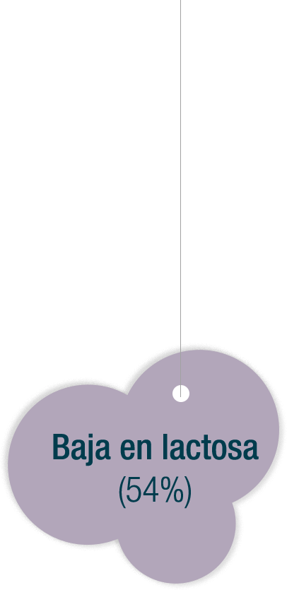

Apoye a sus pacientes a reducir el tiempo de llanto en 75%2 con Alula Comfort, gracias a su exclusiva formulación:

Una vez que los trastornos gastrointestinales se alivien, apóyelos reintegrándolos al Sistema Alula 1+2+3

En sus manos está ayudarlos a alcanzar un peso y talla adecuados.
2. Litmanovitz, I. (2014). Reduced crying in term infants fed high beta-palmitate formula: a double-blind randomized clinical trial. BMC Pediatrics 2014 (Citado 24 abril 2019); 14:152. Disponible en biomedcentral.com. Recuperado 24 abril, 2019, de https://bmcpediatr.biomedcentral.com/articles/10.1186/1471-2431-14-152